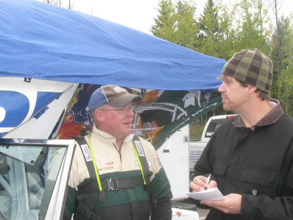
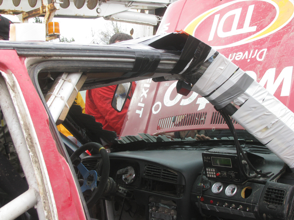

Updates from L'Anse Service #2
-It turns out that the Jim Scray/Colin Vickman Datsun 510 blew a motor last night, thus their DNF.
-It has been confirmed that Chris Greenhouse/Brian Johnson did, indeed, blow a rather comprehensive hole in the block of their Plymouth Neon.
-The VW Beetle of Mark and John Huebbe has officially retired from the rally. We have not been able to find the exact reason, but one assumes it pertains to their earlier ignition problems.
-Jan and Jody Zedril averted catastrophe by inches on a notorious Right 5 over Kick on the Arvon Tower stage. The kick was really more of a jump. The brothers drove the Mitsubishi Lancer to the end of the stage with a rear wheel packed full of junk and horribly out of balance. They lost some time but they still maintain a sizable lead in MaxAttack!
-Alex Kihurani, co-driving for Joseph Burke in the #115 Ford Fiesta, reports that conditions today are decent, and the last two stages were good. The Zedrils are just too far ahead, so they just need to keep on moving. Joseph said that they bent a tie rod end on the same Arvon R5/kick that almost caught out the Zedrils. He says they are putting about four seconds a mile on the Mitsubishi, but there just is not enough stage mileage left to catch the leaders.
-Billy Mann thought that the infamous R5/kick was "hilarious." He is trying to ensure that he and co-driver Mary Warren stay in third place for the MaxAttack! money. He says the #37 Honda Civic is having a few minor mechanical issues.
-Silas and Matt Himes, in the #535 Honda Civic, tried the kick on Herman on the right side this year rather than the left side, and it threw them even higher. On the R5/kick on Arvon they went fast and high and landed in the water on the stage. Matti says they are having one moment per stage. Silas says that "this [the R5/kick] is just plain old dangerous."
-Chris Czyzio says that they got big air on the Arvon kick as well. The first section was rough, but Herman is in fantastic shape. He and Jeff Secor are going well in the #244 Volvo 240 and are having fun.
-Steve Brockelman and Dustin Masters took the jump a little hot in their #262 GMC Sonoma. Nothing is broken, nothing is bent. They are still running sixth in MaxAttack!.
-Ian Seppanen and Daniel Clark said they got up to 100 miles per hour on Arvon in the #240 240SX, albeit not for a long time. Ian says the Nissan flies very well, and that the crew is doing a fine job.
-Cameron Steely and Josh Buller have resolved the cooling issue in the #824 Ford Focus. It turns out that it is a faulty temperature sensor that is causing the car to overheat. They are adding water after every stage, and are continuing.
-Daryn Chernick and Matt Conte have had an adventurous time of things in the #841 VW GTI. They were looking feverishly for a windshield, any windshield, to repair the damage from their rollover on the Arvon R5/kick. They had a wiggle on the landing, and when they put the right front in the water it caused a gentle rollover. They were able to secure a brand new Evo windshield from another team, kicked out the old one, and applied copious quantities of duct tape to secure the Evo windshield on the Golf.
-Jake Blattner said that the #600 Ford Fiesta, with Dillon Van Way behind the wheel, is running well and enjoying the stages.
-The crew of Dave Grenwis and Drew Burkholder report that the #654 VW GTI did not have any issues, and the driver and co-driver were off having a snack.
-The #551 VW GTI of Kristofer Yahner and Tony Benusa report no issues and they are having fun. The same applies for the #864 Erik Hill/Oliver Cooper Eagle Talon.
Here are the results through Stage 13 (of 17):
1. Zedril/Zedril (Mitsubishi Lancer) 1:57:54
2. Burke/Kihurani (Ford Fiesta) 2:00:08
3. Mann/Warren (Honda Civic) 2:09:38
4. Himes/Himes (Honda Civic) 2:10:29
5. Czyzio/Secor (Volvo 240) 2:21:36
6. Brockelman/Masters (GMC Sonoma) 2:31:36
7. Seppanen/Clark (Nissan 240SX) 2:33:41
8. Chernick/Conte (VW GTI) 2:42:08
DNF - Huebbe/Huebbe (VW Beetle)
DNF - Greenhouse/Johnson (Plymouth Neon)
DNF - McCorison/Johansen (Hyundai Tiburon)
DNF - Holder/Payeur (Plymouth Neon)
DNF - Van Way/Blattner (Ford Fiesta)
DNF - Grenwis/Burkholder (VW GTI)
DNF - Summers/DesLauriers (Mazda RX-7)
DNF - Donlin/Tinsey (Ford Escort)
DNF - Scray/Vickman (Datsun 510)
DNF - Bushore/Bushore (VW Jetta)
DNF - Hill/Cooper (Eagle Talon)
DNF - Yahner/Benusa (VW GTI)
Stage 14 is being transited, as the stage crew lost contact with the medical team.
Here are some photos from the second L'Anse service:
The Silas Himes/Matt Himes Honda Civic receives some attention at the second L'Anse service.
Joseph Burke and Eric Burmeister (Joseph is standing on a wheel...).

Chris Czyzio and Eric Burmeister
Daryn Chernick poses with the Evo windshield he procured to fit in his rolled VW Golf
 Daryn Chernick and his crew chief fit the Evo windshield on the GTI, while glass is swept away.
Daryn Chernick and his crew chief fit the Evo windshield on the GTI, while glass is swept away.

It takes a lot of duct tape to affix an Evo windshield in a VW GTi.